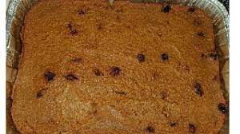

Pen-patat

Description
Le pain patates est un dessert que presque tout Haïtien né avant les années 80 connaît. D’une consistance allant de bouetteuse a aussi ferme qu’un pain aux bananes
Vous l’aimerez c’est garanti.
Ingredients
- 2½ tasses de patate douce (patates à la peau violette et la chaire blanche)
- 1 tasse de lait de carnation (Lait évaporé)
- 1¼ tasse de lait de coco
- 1 tasse de sucre brun
- 50 grammes de beurre
- 2 cuillères à table d'extrait de vanille pure
- 1 banane mûre (le fruit)
- 1 cuillère à thé de cannelle moulue
- 1 cuillère à thé de muscade
- 1 lime (zeste de la lime seulement)
- ½ de cuillère à thé de sel
- 1 cuillère à table de gingembre frais moulue
- ½ tasse de raisin sec
- ** facultatif ** ¼ de tasse de rhum brun (Barbancour ou autre)
Steps
- Laissez tremper les raisins secs dans le rhum (si pas de rhum, laissez tremper dans l'eau)
- Lavez et pelez les patates douces (les couper en deux sur le sens de la longueur si vous utilisez un robot culinaire)
- Assurez-vous d'avoir approximativement 2½ tasses
- Première étape
pain patate - sweet potato bread pudding
- Mettre dans une casserole
Ajoutez le lait de carnation, le lait de coco, le sucre brun, le beurre, le sel et la muscade.
Dépendamment de la puissance de votre feu, cuire a médium ou médium-doux pendant 45-75 minutes
**remuer fréquemment afin d'éviter que le mixte ne colle ou durcisse
Deuxième étape
pendant ce temps, à laide d'une fourchette écraser la banane mûre et l'ajouter au mélange, ajouter aussi les raisins secs, le rhum, le zeste de lime ainsi que le gingembre.
- **continuer de brasser fréquemment
- baisser à feu doux
- après 40 minutes, ajouter l'extrait de vanille, brasser, et couvrir.
- Laisser mijoter 5-10 minutes ou jusqu'a une consistance molle, mais ferme.
- Lorsque prêt, verser le mélange dans un moule à gâteau peu profondpain patate chaudiere et moule
- Cuire au four à 350 degrés pendants approximativement 1 h 30 ou jusqu'a couleur dorée.
- Réfrigérer au moins 24 heures pour avoir la consistance de gâteau.
Go to Home page